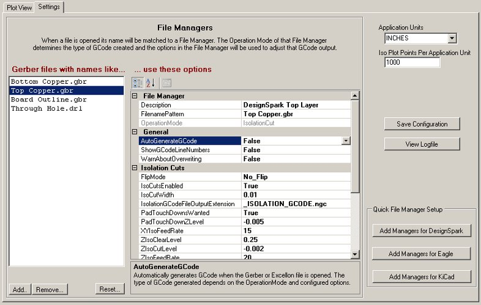

Line Grinder
Gerber Plot to Isolation Milling GCode Software
Settings and File Managers

The Line Grinder Settings Tab
The Settings Tab
The Settings tab of the Line Grinder software design provides a place to configure the settings and properties which will be used to convert the Gerber and Excellon files into GCode. Fundamentally there are two sectons - the section on the right which contains global settings used for every file which is opened and the section on the left (entitled File Managers) which is used to associate specific settings with specific file types. There is also a section located on the bottom right hand side of the Settings tab which contain buttons to create a set of default File Managers suitable for various common types of PCB design software.
The Global Settings
- Application Units
- The CNC Mill which will run the GCode and perform the physical milling operations is usually manufactured to operate in either inches or millimeters. This setting tells the Line Grinder software the type of GCode to create. Note that the Line Grinder software cannot convert an inch based Gerber file to millimeters - if the Application Units setting does not match the settings inside the Gerber file header an error message will be displayed when the file is opened.
- Iso Plot Points Per Application Unit
- The Gerber to GCode algorithm works by creating a kind of virtual plot of the Gerber file, mapping that plot onto an array of pseudo pixels and then figuring out which objects overlap and where the edges of those objects are and where the intersections of the overlap points are. This parameter controls the number of virtual pixels (Iso Plot Points) used per application unit). In general, the higher the number of virtual pixels per inch (or millimeter) the finer the detail that can be detected (and hence incorporated into the isolation routing). The drawback to having a large setting for Iso Plot Points Per Application Unit is that larger values will cause the Gerber to GCode conversion process to take a much longer time.
File Managers
The File Manager panel is split into two parts. On the left is a list of partial file names - these file name patterns are tested against the newly opened file. If the file name pattern in the File Manager is contained with in the name of the newly opened file then the operations and configuration settings contained within that File Manager are applied to that file. The File Manager assigned to a file when it is opened entirely determines the how the file is processed.
There are four basic types of File Manager. Each type is designed to produce a different type (or types) of GCode. The File Manager type is set in the OperationMode parameter when it created. Note that the OperationMode cannot be changed. The types of File Manager and their function are listed below. Click on the File Manager type to view a help page on that File Managers configuration items.
- Isolation Cut
- These File Managers assume the file contains a Gerber plot of the traces and pads on the PCB and will convert that Gerber plot into GCode which electrically isolates the copper of the plot from the remainder of the circuit board. This type of File Manager can also produce Reference Pin GCode which enables the top and bottom layers to be aligned.
- Board Edge Mill
- This type of File Manager expects the file to contain a Gerber plot of the outline of the PCB board. It will generate GCode which will cut around the outside of the board - thus separating it from a larger blank PCB. This type of File Manager can also produce Bed Flattening GCode which can be used to mill flat a throw-away piece of wood bolted to the mill bed. This ensures that the bed on which the PCB is mounted is exactly square and true to the toolhead.
- Text and Label
- Many PCB's contain a silkscreen layer which documents or annotates various parts of the board. This type of File Manager produces GCode that engraves text onto the PCB without creating isolation cuts for it. Essentially the toolhead (with whatever bit is mounted there by the operator) is run down the center of the Gerber plot items.
- Excellon
- Almost all PCB design programs will produce Excellon drill files. These files are designed to drill all of the holes in the PCB. A File Manager of this type will convert the Excellon drill file into GCode suitable for drilling the holes the PCB requires.
Creating a New File Manager
PCB Design programs typically output each layer of the PCB with a distinct name. If you wish to convert this file to GCode you need to create a File Manager of the appropriate type (OperationMode)and edit the FilenamePattern configuration item to match all (or part) of the files name. Usually just the last part is used in order to configure a File Manager suitable for processing any file of that type.
To create a new File Manager press the Add button located at the bottom of the File Manager panel. A form will pop up asking for the type of File Manager to create. Once the new File Manager is created, the FilenamePattern can be edited to ensure that it gets matched to the newly opened files of that name. The other configuration parameters should also be adjusted at that time.
An unlimited number of File Managers can be created, however, only a few are usually necessary if the FilenamePattern is set to match all files of that particular type.